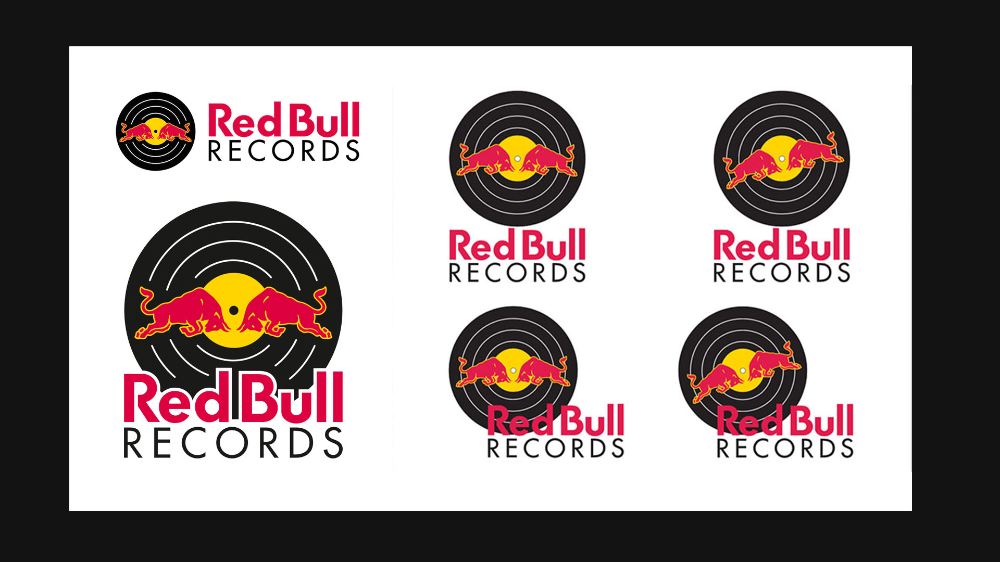
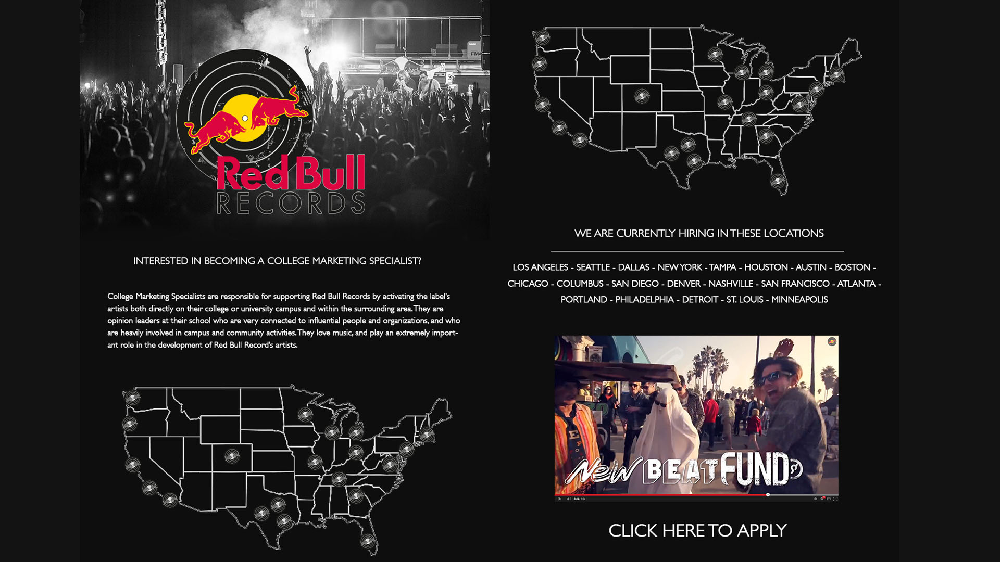
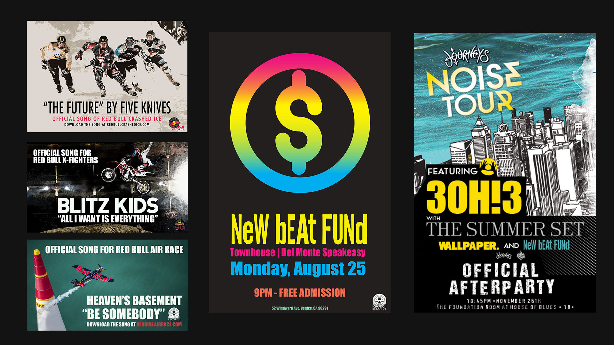
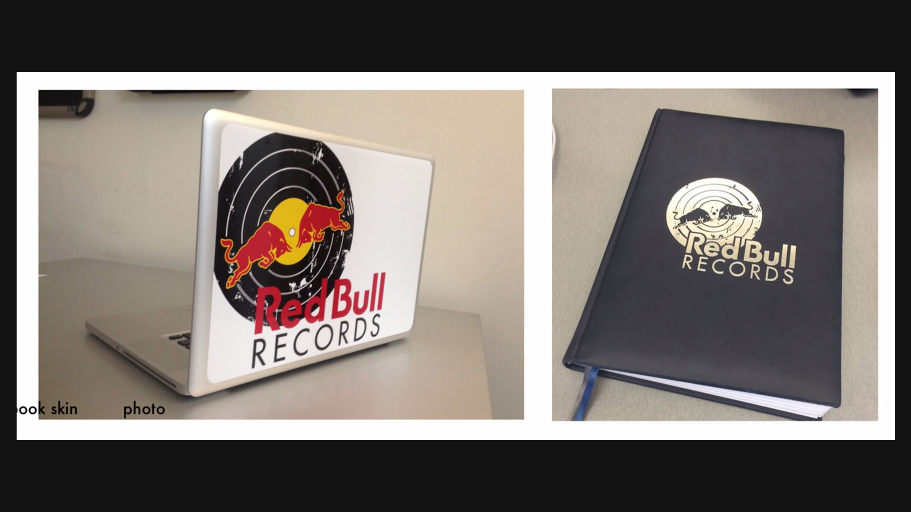
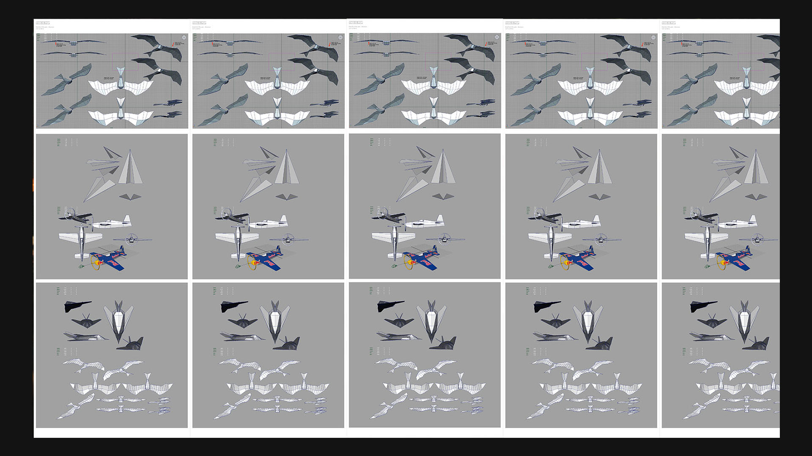

2013 / music / identity / media systems
A record-label world built through logo design, artist campaign systems, internal product concepts, tour graphics, launch materials, notebooks, media assets, and music-led digital experiments.

The work spanned the visible and invisible parts of a music company: public campaign materials, artist graphics, web concepts, event assets, internal communication surfaces, notebooks, and tools that helped the team understand what the label was becoming.
It was an early lesson in making systems that carry culture, not just information.



